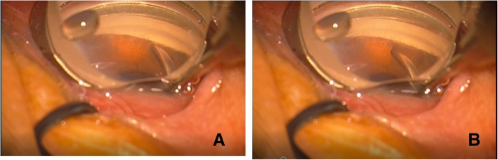
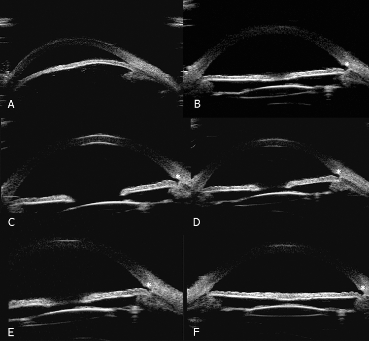
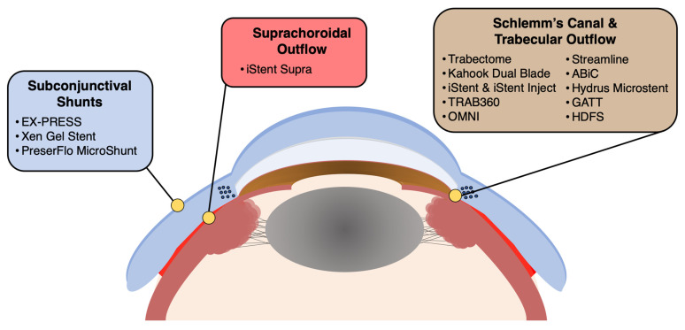

1985 — MIGS ở glôcôm góc đóng và góc hẹp: chọn bệnh nhân, goniosynechialysis, ghép phaco và biến chứng / Minimally invasive glaucoma surgery in primary angle-closure glaucoma
Tags: pattern:goc-dong pattern:goc-hep pattern:PAS pattern:dinh-mong-mat-chu-bien pattern:tang-nhan-ap pattern:teo-dia-thi-glaucom vung:goc-tien-phong vung:tien-phong vung:the-thuy-tinh vung:mat protocol:gonioscopy protocol:UBM protocol:AS-OCT protocol:phaco protocol:gsl protocol:migs score:PAS-do
Mức chắc chắn (certainty): tổng hợp y văn (literature synthesis) — ghép 1 phân tích gộp MIGS trong góc đóng 23 nghiên cứu / 875 mắt (Paik et al., Clin Ophthalmol 2025, PMC11830760, CC BY-NC 3.0), 1 phân tích gộp phaco ± GSL + MIGS 12 nghiên cứu / 633 mắt (PMC11966876, CC BY-NC-ND 4.0), 2 phân tích gộp phaco-GSL so với phaco đơn thuần (8 RCT: PMC7899770; 9 RCT: PMC10836673), 1 đoàn hệ 27 mắt GSL ở góc đóng cấp và mạn (PMC6399882), 1 loạt 22 mắt phaco + GSL + trabectome (PMC8260581) và 1 loạt 47 mắt theo dõi 36 tháng (PMC11704697). Chỗ suy luận ghi rõ "suy luận"; chỗ chưa có số liệu ghi "chưa rõ".
Vì sao bài này quan trọng: glôcôm góc đóng chiếm 87% ca glôcôm ở người châu Á và 70% ở nữ (dẫn trong PMC11830760) — tức đây là thể bệnh phổ biến nhất ở nước ta, không phải "thể hiếm". MIGS vốn được cấp phép cho góc mở và dùng ngoài nhãn (off-label) cho góc đóng, nên câu hỏi không phải "có làm được không" mà là "góc này có mở ra được không, mở bằng gì, và thêm MIGS có đáng so với phaco đơn thuần". Trả lời sai theo hai hướng đều tốn kém: hứa hão với bệnh nhân bằng một can thiệp chỉ cộng thêm 0,59 thuốc (khoảng tin cậy vắt qua 0), hoặc bỏ qua MIGS ở mắt còn PAS 180–360° rồi phải mổ lọc.
1. Tổng quan bệnh học – cơ chế hình ảnh: vì sao góc đóng là bệnh của THỂ THỦY TINH, và vì sao MIGS chỉ là "phần phụ"
1.1 Vì sao góc đóng — và vì sao phaco một mình đã hạ được áp
- Cơ chế lõi (lens-driven): thể thủy tinh to ra theo tuổi (lens vault tăng) đẩy mống mắt ra trước, làm hẹp góc; ở mắt trục nhãn cầu ngắn, tiền phòng nông, thể thủy tinh dày thì góc đóng hẳn. Vì vậy lấy thể thủy tinh = mở góc bằng cơ học: tiền phòng sâu thêm, góc mở ra, và IOP giảm khoảng 5 mmHg so với baseline sau washout (số dẫn trong PMC11830760).
- Pha 1 — góc đóng còn mở được: dính mống mắt–bè chỉ là tiếp xúc (appositional), mở ra là hết.
- Pha 2 — dính thật (synechial, PAS): tiếp xúc kéo dài → dính xơ; lúc này lấy thể thủy tinh không đủ mở góc, phải bóc dính (goniosynechialysis, GSL).
- Pha 3 — bè/ống Schlemm đã hỏng: tiếp xúc mống mắt–bè kéo dài gây lắng sắc tố, thoái hóa không viêm, mất tế bào nội mô ống Schlemm và phản ứng xơ sửa chữa — những thay đổi này có cả ở vùng KHÔNG dính PAS (tổng quan trong PMC11830760). Đây là lý do IOP vẫn cao sau khi góc đã mở, và là cơ sở sinh lý để thêm MIGS: bắc cầu qua bè bị hỏng.
- Vì sao có mắt thất bại dù đã mở góc + MIGS: nếu tắc nghẽn nằm xa hơn (ống Schlemm, kênh góp, áp lực tĩnh mạch củng mạc), thì cắt bè hay đặt stent không giúp; lúc đó phải nghĩ XEN (dẫn dưới kết mạc) hoặc endoCPG (giảm sản xuất thủy dịch). Đây là suy luận cơ chế có cơ sở, không phải dữ liệu RCT.
1.2 Vì sao "thêm MIGS" là câu hỏi khó — con số phải nhớ
- MIGS trong góc đóng có hiệu quả thật (23 nghiên cứu / 875 mắt; 15 nghiên cứu / 590 mắt vào phân tích gộp): IOP giảm 7,71 mmHg (95% CI 5,16–10,26) và giảm 1,57 thuốc (1,17–1,96) ở 1 năm (PMC11830760).
- Phaco ± GSL + MIGS (12 nghiên cứu / 633 mắt): IOP giảm 10,25 mmHg (7,06–13,43), giảm 1,89 thuốc ở 12 tháng; IOP từ 25,85 → 14,10 mmHg, thuốc từ 2,50 → 0,60 (PMC11966876).
- Phaco-MIGS so với phaco đơn thuần (5 nghiên cứu / 492 bệnh nhân): chênh lệch IOP 1,22 mmHg (95% CI −0,96 đến 3,39 — vắt qua 0) và chênh lệch thuốc 0,59 (95% CI −0,04 đến 1,22 — sát 0) (PMC11830760). Nói thẳng: phần lớn IOP giảm đến từ lấy thể thủy tinh; MIGS cộng thêm khiêm tốn và chưa chắc có ý nghĩa.
- Chọn loại MIGS nào (cùng phân tích gộp): cắt bè trong (ab interno trabeculotomy, AIT) giảm IOP 11,48 mmHg (7,12–15,83) — tốt hơn iStent 4,12 mmHg (−0,39 đến 8,62; p < 0,01) và tốt hơn endoCPG; **iStent vs endoCPG không khác** (p = 0,14). Về thuốc: **AIT 2,38** > endoCPG 1,46 > iStent 1,10 (p < 0,01) (PMC11830760).
- Nhóm theo kỹ thuật (12 nghiên cứu): goniotomy 13,10 mmHg (7,59–18,62), GATT 11,54 (7,18–15,90), iStent 3,94 (2,58–5,30) (PMC11966876) — cùng một xu hướng: cắt bè rộng > stent nhỏ.
- GSL có đáng làm? So với phaco đơn thuần: 8 RCT (224 vs 236 mắt) — IOP và số thuốc không khác ở 6 và 12 tháng, nhưng PAS giảm nhiều hơn (PMC7899770). 9 RCT — IOP thấp hơn 1,81 mmHg (p = 0,002), PAS giảm 59,15° (p < 0,00001), không khác AOD500/750, TISA500, thuốc, thị lực (PMC10836673). Kết luận thực hành: GSL là can thiệp vào cơ chế (giảm PAS, ngăn tái dính) hơn là "thuốc hạ áp mạnh".
1.3 GSL ở góc đóng cấp vs mạn: cùng mổ, khác kết cục
- 27 mắt phaco-GSL có PAS lan rộng (13 cấp, 14 mạn): IOP 29,77 ± 11,55 → 14,92 ± 1,66 mmHg (cấp) và 26,00 ± 11,20 → 14,93 ± 2,70 mmHg (mạn); PAS 314,23 ± 49,07° → 116,54 ± 73,78° (cấp) và 285,00 ± 53,28° → 156,43 ± 56,35° (mạn) (PMC6399882).
- Thành công 100% (cấp) vs 64,3% (mạn); tái dính PAS 30% vs 83,3%; 5 mắt tái dính > 90° và tất cả hình thành trong TUẦN ĐẦU sau mổ (PMC6399882). Đây là con số định hình cách theo dõi: khám góc lại trong 7 ngày đầu, không phải 1 tháng.
- Ghép thêm trabectome (22 mắt): IOP 22,07 ± 6,62 → 15,06 ± 3,39 mmHg, thuốc 2,68 ± 1,17 → 0,78 ± 0,73, thành công 88,9% ở 12 tháng, không biến chứng đe dọa thị lực (PMC8260581).
- Theo dõi 36 tháng (47 mắt phaco + GSL + AIT): IOP 20,93 ± 6,53 → 15,09 ± 3,63 mmHg, thuốc 2,45 ± 1,18 → 1,25 ± 1,55, thành công 90,0%; mức giảm IOP tương quan thuận với IOP nền (p < 0,001) (PMC11704697). Nghĩa là: mắt có IOP nền càng cao hưởng lợi càng nhiều — đừng chọn MIGS cho mắt IOP 16 mmHg rồi kỳ vọng nhiều.
2. Mẫu hình + chẩn đoán phân biệt theo giai đoạn và hình thái góc (gamut)
Bốn câu hỏi trước khi quyết định: (1) góc đóng kiểu gì (tiếp xúc hay dính thật, bao nhiêu độ)? (2) bè/ống Schlemm còn chức năng hay đã hỏng? (3) thể thủy tinh còn hay đã thay? (4) mục tiêu IOP cần giảm bao nhiêu?
- Theo giai đoạn:
- PACS (nghi ngờ góc đóng): góc hẹp, chưa tăng áp, chưa teo thị — không có chỉ định MIGS; theo dõi/ LPI theo chỉ định.
- PAC (góc đóng, chưa glôcôm): LPI ± phaco; chưa cần MIGS.
- PACG mạn, còn thị trường, PAS < 180°, còn thể thủy tinh: phaco ± GSL, thêm MIGS nếu muốn giảm thuốc; đây là nhóm bằng chứng tốt nhất cho MIGS.
- PACG mạn, PAS 180–360°, IOP cao: phaco + GSL + AIT/GATT (cắt bè rộng) — nhóm hưởng lợi nhiều nhất, nhưng tái dính cao (83,3%).
- PACG giai đoạn cuối, thị trường rất hẹp: mục tiêu là IOP thấp tuyệt đối → mổ lọc/tube thường phù hợp hơn MIGS; endoCPG là lựa chọn khi không còn cách nào (xem thêm 1448 cho biến chứng).
- Theo hình thái góc (mẫu hình hình ảnh):
- Góc đóng do tiếp xúc: mống mắt chạm bè nhưng bờ dính mềm, mở được khi ấn đèn soi góc (indentation).
- Góc đóng do dính: dải xơ trắng–xám bắc qua góc, không mở khi ấn; đo số độ PAS là ngôn ngữ chung giữa các nghiên cứu.
- Góc đóng + thể thủy tinh dày: trên UBM thấy lens vault lớn, thể mi đẩy ra trước, tiền phòng nông đều.
- Góc đóng sau phaco mà IOP vẫn cao: nghĩ bè hỏng (pha 3) — cần MIGS cắt bè hoặc chuyển sang dẫn lưu dưới kết mạc/endoCPG, không lặp lại GSL vô ích.
- Đo góc bằng gì: gonioscopy ấn (indentation) là chuẩn vàng lâm sàng; AS-OCT/UBM định lượng AOD500/750, TISA500/750, độ mở góc, lens vault; không thay thế gonioscopy vì AS-OCT không phân biệt được dính thật với tiếp xúc ở mọi vị trí.
3. Bảng so sánh phân biệt (ma trận đối chiếu): chọn can thiệp nào cho góc đóng
| Thực thể / kỹ thuật | Hình ảnh & chỉ định điển hình | Chốt vào (rule-in) | Chốt loại (rule-out) | Gợi ý xác nhận |
|---|---|---|---|---|
| Phaco đơn thuần | Góc hẹp do thể thủy tinh, PAS < 90–180°, chưa teo thị nặng | Góc mở rộng sau khi lấy thể thủy tinh + IOP giảm ~5 mmHg so baseline washout | PAS ≥ 180° dính thật, bè đã hỏng → không đủ | Gonioscopy trước/sau; IOP không thuốc 3–6 tháng |
| Phaco + GSL | Góc đóng dính thật, PAS lan rộng, còn thể thủy tinh | PAS ≥ 180°, mở được bằng bóc dính; IOP giảm 1,8 mmHg và PAS giảm ~59° so với phaco đơn thuần | Không có PAS (làm thêm vô ích) hoặc góc đóng do khối sau (u, nang) | Gonioscopy trong mổ + đo PAS 1 tuần, 1 tháng |
| AIT / goniotomy (KDB, trabectome) | PAS vừa–nhiều, bè còn nhưng tắc; cần giảm thuốc | IOP giảm 11,5–13,1 mmHg; hiệu quả hơn iStent có ý nghĩa (p < 0,01) | Mắt đã mất hết vùng bè quan sát được; IOP mục tiêu rất thấp | Nội soi góc trong mổ; theo dõi máu tiền phòng |
| GATT (360°) | Dính góc lan rộng, cần mở 360°, mắt còn thể thủy tinh hoặc đã phaco | GATT giảm 11,54 mmHg; máu tiền phòng 33,2% — cao nhất nhóm | Góc không quan sát được / mống mắt dày; mắt viêm hoạt động | Gonioscopy sau mổ, kiểm tra vòng cắt 360° |
| iStent / stent bè nhỏ | Góc mở được, PAS ít, cần giảm thuốc hơn là giảm IOP | Giảm 3,94 mmHg + 1,1–1,2 thuốc; biến chứng thấp nhất (máu 6,1%) | PAS nhiều, áp lực tĩnh mạch củng mạc cao, cần giảm IOP lớn | AS-OCT kiểm tra vị trí stent; soi góc tìm bít lỗ |
| endoCPG | Góc đóng không mở được hết, nhiều tuổi, không muốn mổ lọc | Giảm IOP nhờ giảm sản xuất; hiệu quả khi điều trị ≥ 270° | Chưa điều trị đủ 270° (kém hiệu quả); mắt còn khả năng phục hồi thị lực cao | Đèn khe/soi đáy mắt theo dõi viêm, phù hoàng điểm |
| XEN / PreserFlo (dưới kết mạc) | Cần IOP rất thấp, bè và ống Schlemm đều hỏng | Dẫn lưu bỏ qua toàn bộ đường bè–Schlemm | Góc đóng chưa xử lý (nguy cơ bít đầu trong), kết mạc xấu | Đèn khe bọng lọc, AS-OCT bọng |
4. Protocol: đo góc – mổ – theo dõi tuần đầu
4.1 Trước mổ
- Gonioscopy ấn 4 góc, ghi số độ PAS từng góc (tổng 0–360°), phân biệt tiếp xúc vs dính; chụp ảnh góc để so sánh sau mổ.
- AS-OCT/UBM: AOD500, TISA500, độ mở góc, lens vault, chiều sâu tiền phòng (ACD). Ngưỡng "đóng" phụ thuộc định nghĩa từng nghiên cứu (AOD500 ≈ 0 là đóng hoàn toàn; nhiều nghiên cứu dùng AOD500 < 0,20 mm cho "hẹp") — luôn ghi định nghĩa khi đối chiếu số.
- Sinh trắc (biometry): AL, ACD, độ dày thể thủy tinh, lens vault — quyết định có nên phaco trước và công suất IOL.
- Đánh giá thần kinh thị: RNFL/GC-IPL, thị trường làm mốc; mắt đã mất nhiều thần kinh thì mục tiêu IOP phải thấp hơn, đừng chọn MIGS "nhẹ".
4.2 Trong mổ (thứ tự có ý nghĩa)
- Phaco + IOL trước — mở góc bằng cơ học, tiền phòng sâu, tạo không gian làm việc cho MIGS.
- GSL — bóc dính mống mắt–bè bằng spatula/OVD dưới quan sát gonioscopy; bóc hết dính thấy được, tránh chảy máu nhiều.
- MIGS — AIT/goniotomy/GATT hoặc stent, chọn theo độ dính và mục tiêu IOP (mục 3).
- Kiểm tra góc cuối mổ, không để OVD sót (gây tăng IOP và dính lại); không bơm quá căng.
4.3 Theo dõi — tuần đầu là tuần quyết định
- Ngày 1–7: đo IOP, soi góc lại (tái dính hình thành trong tuần đầu, 5 mắt tái dính > 90° trong PMC6399882), kiểm tra máu tiền phòng.
- 1 tháng, 3 tháng, 6 tháng, 12 tháng: IOP không thuốc, số thuốc, số độ PAS, RNFL/thị trường.
- Ngưỡng hành động thực hành: IOP > 21 mmHg kéo dài > 4–6 tuần dù đã mở góc → khởi động lại thuốc; PAS tái dính > 90° trong tuần đầu → cân nhắc bóc lại/iridoplasty (2 mắt trong PMC11830760 phải argon laser iridoplasty vì PAS tái phát tại vùng đã cắt bè).
flowchart TD
A["Glocom goc dong co duc the thuy tinh"] --> B{"Gonioscopy: PAS bao nhieu do?"}
B -->|"PAS < 90 do, goc con mo"| C["Phaco + IOL"]
B -->|"PAS 90-180 do"| D["Phaco + GSL"]
B -->|"PAS > 180 do, dinh that"| E["Phaco + GSL + cat be trong AIT hoac GATT"]
C --> F{"IOP muc tieu dat khong thuoc?"}
D --> F
E --> F
F -->|Co| G["Theo doi: goc 1 tuan, IOP 1-3-6-12 thang"]
F -->|Khong| H{"Be va ong Schlemm con chuc nang?"}
H -->|Con| I["Them MIGS cat be rong hoac GATT"]
H -->|Hong| J["XEN duoi ket mac hoac endoCPG tren 270 do, hoac mo loc"]
5. Biến thể bình thường và cạm bẫy
- Máu tiền phòng "gần 100%" không phải biến chứng. Ở AIT, máu tiền phòng thoáng qua gặp tới gần 100% trong một số loạt; sau khi loại máu thoáng qua tự hết, tỉ lệ biến chứng chung còn 141/820 = 17,2% (so với 293/875 = 33,4% nếu tính cả máu thoáng qua) (PMC11830760). Đừng báo bệnh nhân "đã có biến chứng" vì một chút máu ngày 1.
- Tăng IOP thoáng qua sau AIT/GATT (4,9–7,4%) thường đáp ứng thuốc; phân biệt với tăng IOP do OVD sót, viêm, hoặc dính lại góc.
- Tái dính PAS là kẻ thù chính, không phải "thất bại kỹ thuật". 83,3% ở góc đóng mạn có PAS lan rộng, hình thành trong 7 ngày (PMC6399882) — nếu không soi góc lại sớm, bạn sẽ chỉ phát hiện khi IOP đã tăng.
- Stent bị mống mắt bít: tỉ lệ tới 27% trong một nghiên cứu (dẫn trong PMC11830760) — vì vậy iStent cho kết quả kém hơn AIT ở góc đóng; đừng chọn stent nhỏ cho góc còn hẹp.
- "Phaco đã đủ" — đúng một nửa. Chênh lệch thuốc của phaco-MIGS so với phaco là 0,59 với CI −0,04 đến 1,22 — tức có thể bằng 0. Nếu bệnh nhân chỉ cần giảm 1 thuốc và chấp nhận uống/nhỏ thuốc, phaco đơn thuần là lựa chọn hợp lý, rẻ hơn và ít biến chứng hơn.
- MIGS là off-label ở góc đóng: phải giải thích rõ với bệnh nhân và ghi hồ sơ (PMC11830760 nêu rõ điều này); không được trình bày như chỉ định đã được cấp phép.
- Cạm bẫy chọn bệnh nhân: IOP nền càng cao, lợi ích càng lớn (tương quan thuận, p < 0,001; PMC11704697); mắt IOP 16 mmHg, thị trường còn tốt là nhóm ít lợi nhất từ MIGS.
- Cạm bẫy "cắt bè càng rộng càng tốt": endoCPG dưới 270° không đủ hiệu quả; nhưng cắt quá rộng ở mắt teo thể mi có nguy cơ teo nhãn — cân bằng, không cực đoan.
- Không dùng MIGS khi: áp lực tĩnh mạch củng mạc cao (giả u, hội chứng tĩnh mạch chủ trên, glôcôm tân mạch), glôcôm do viêm hoạt động, hoặc không quan sát được góc trong mổ.
6. Tự lượng giá — Blind Quiz
Ca 1 — Nữ 64 tuổi, châu Á, đau mắt đã hết sau LPI, IOP 28 mmHg với 3 thuốc, đục thể thủy tinh độ 2, góc dính 300°.

- Hỏi: (1) mô tả (A) và (B); (2) vì sao phaco đơn thuần không đủ ở mắt này? (3) kế hoạch mổ và mốc theo dõi?
Bấm để hiện đáp án (findings + chẩn đoán)
- (A) góc đóng dính (synechial) — dải xơ bắc qua bè, không mở khi ấn; (B) sau phaco + GSL góc mở lại, thấy được bè ở cùng vị trí.
- Không đủ vì: PAS 300° là dính thật, và tiếp xúc kéo dài đã làm hỏng bè/ống Schlemm — lấy thể thủy tinh chỉ mở góc, không sửa được bè; IOP vẫn cao.
- Kế hoạch: phaco + IOL + GSL ± AIT/GATT; theo dõi góc trong 7 ngày (tái dính tới 83,3% ở thể mạn), rồi IOP 1–3–6–12 tháng. Ca gốc (27 mắt): thành công 100% cấp / 64,3% mạn (PMC6399882).
- Nguồn ảnh: Tian T et al., BMC Ophthalmol 2019 (PMC6399882), CC BY 4.0 — nguyên bản.
Ca 2 — Nam 71 tuổi, PACG mạn, IOP 22 mmHg, 2,7 thuốc, góc hẹp 4 góc; được phaco + GSL + trabectome.

- Hỏi: (1) đọc chuỗi A–F; (2) dấu hiệu nào chứng minh góc đã mở thật (không chỉ do thuốc)? (3) kết quả kỳ vọng ở 12 tháng?
Bấm để hiện đáp án (findings + chẩn đoán)
- (A) tiền phòng nông, góc hẹp/đóng, thể thủy tinh dày đẩy mống mắt ra trước; (B–F) sau phaco + IOL + GSL + trabectome: tiền phòng sâu hơn, khoảng mở góc rộng, mống mắt tách khỏi bè.
- Chứng minh góc mở thật: đo AOD500/TISA500 tăng + gonioscopy thấy bè; không dựa vào IOP vì IOP còn chịu ảnh hưởng thuốc và MIGS.
- Kỳ vọng (22 mắt): IOP 22,07 → 15,06 mmHg, thuốc 2,68 → 0,78, thành công 88,9% ở 12 tháng, không biến chứng đe dọa thị lực (PMC8260581).
- Nguồn ảnh: Wang Y et al., Sci Rep 2021 (PMC8260581), CC BY 4.0 — nguyên bản.
Ca 3 — Nam 68 tuổi, PACG, thể thủy tinh đã thay, IOP 17 mmHg với 3 thuốc, góc còn dính 120°; bệnh nhân hỏi "có nên làm MIGS không?".

- Hỏi: (1) kể tên 3 nhóm MIGS theo hình và vị trí; (2) với IOP 17 mmHg và góc dính 120°, MIGS đem lại gì và không đem lại gì? (3) khi nào nên chọn nhóm dưới kết mạc thay vì nhóm bè?
Bấm để hiện đáp án (findings + chẩn đoán)
- Ba nhóm: (1) ống Schlemm/bè (Trabectome, Kahook, iStent/iStent inject, Hydrus, GATT, OMNI, ABiC); (2) trên hắc mạc (iStent Supra, MINIject, CyPass); (3) dưới kết mạc (XEN, PreserFlo, Ex-PRESS) — cộng thêm giảm sản xuất (endoCPG).
- Đem lại: giảm thuốc là chắc hơn giảm IOP (0,59 thuốc, CI sát 0); giảm IOP trung bình khiêm tốn (1,22 mmHg, CI vắt qua 0) (PMC11830760). Không đem lại: bảo đảm IOP thấp tuyệt đối; ở IOP nền 17 mmHg, lợi ích ít (giảm IOP tương quan thuận với IOP nền; PMC11704697).
- Chọn nhóm dưới kết mạc khi: bè và ống Schlemm đều hỏng (IOP vẫn cao sau khi góc đã mở), cần IOP rất thấp, hoặc đã thất bại AIT/GATT; không chọn khi kết mạc xấu hoặc góc chưa xử lý.
- Nguồn ảnh: Balas M, Mathew DJ, Vision (Basel) 2023 (PMC10443347), CC BY 4.0 — nguyên bản.
Bài liên quan chéo
- 1452 – Glôcôm do thể thủy tinh chưa mổ (cơ chế lens-driven và các thể tăng áp do thể thủy tinh)
- 1935 – Đục thể thủy tinh sau MIGS (phaco trên mắt đã có MIGS)
- 1983 – Đục thể thủy tinh sau trabeculectomy (khi MIGS không đủ, mổ lọc và cái giá của nó)
- 1448 – Glôcôm ác tính sau mổ nội nhãn (biến chứng cần loại trừ sau mọi can thiệp góc)
- 1447 – Rách thể mi sau MIGS/Yamane (biến chứng tiền phòng của thủ thuật góc)
- 442 – Glaucoma: OCT và đánh giá thần kinh thị (mốc thần kinh thị để đặt mục tiêu IOP)
- 1882 – Phù hoàng điểm do prostaglandin sau phaco (mắt sau phaco xấu đi: loại trừ nguyên nhân thuốc)
Không dùng để chẩn đoán độc lập khi chưa có người hướng dẫn.